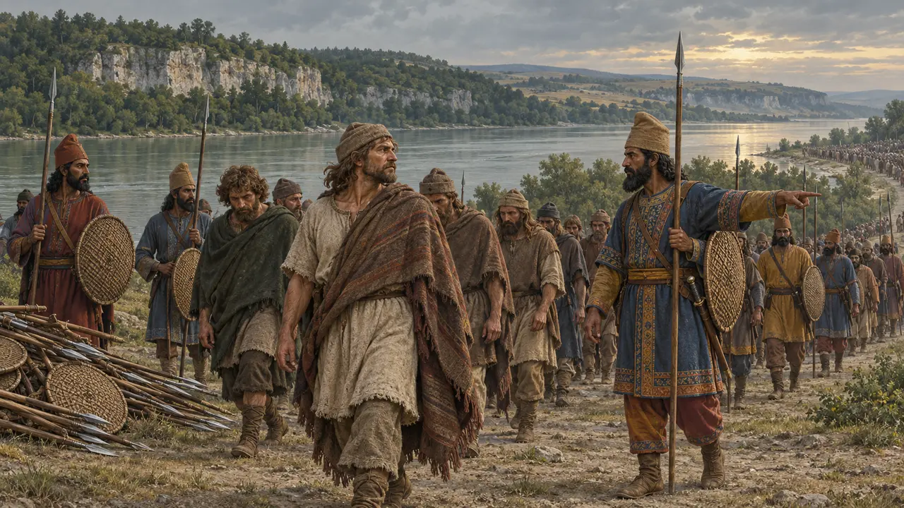
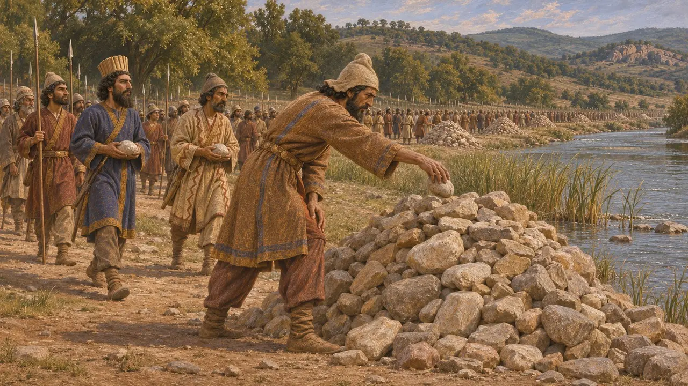
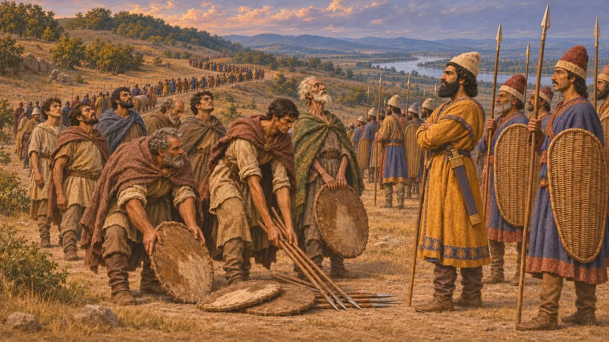
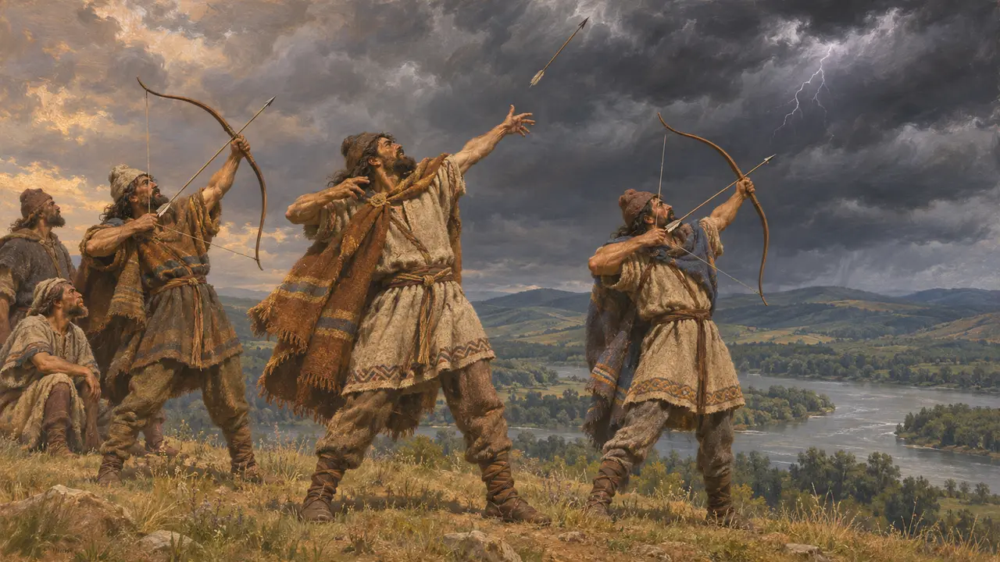
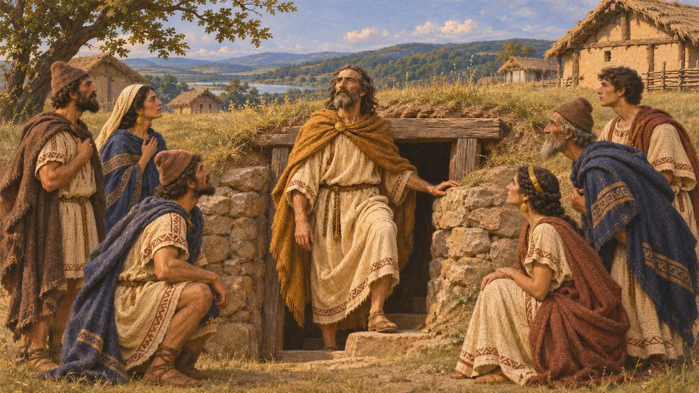
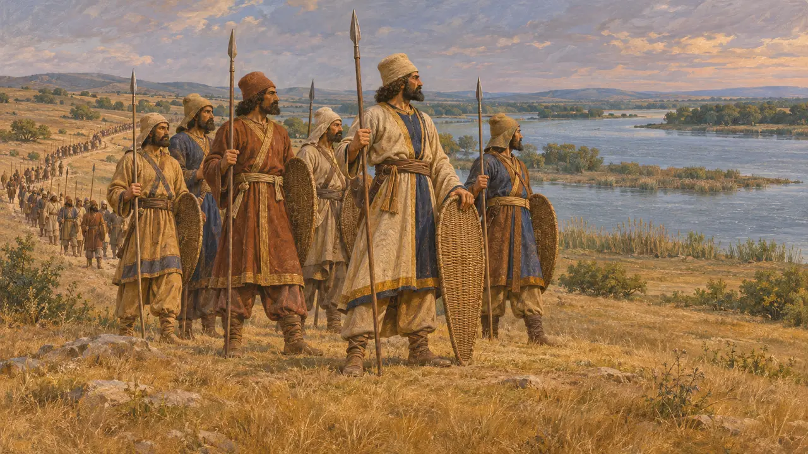

Encyclopédie › Batailles et événements

La défaite des Gètes
La conquête par Darius d'un peuple thrace sur la route de l'Istros, vers 513 av. J.-C.
Dans le jeu : Niveau 6 : Le Pont de bateaux
Lors de sa marche contre les Scythes, vers 513 av. J.-C., Darius traversa la Thrace en direction de l'Istros (le Danube). Hérodote rapporte que la plupart des peuples thraces se soumirent sans combattre, mais que les Gètes résistèrent et furent soumis. L'épisode n'est connu en détail que par Hérodote, qui s'en sert pour décrire les Gètes et leur croyance en leur immortalité.
Dans le jeu : Le jeu présente l'épisode comme une bataille et suit Hérodote : les Gètes se dressent seuls face au Roi et sont contraints de marcher avec son armée. Aucune source perse ne le confirme.

La marche à travers la Thrace
Récit antiqueHérodote raconte que Darius traversa le Bosphore sur un pont de bateaux et mena son armée vers le nord à travers la Thrace, tandis que la flotte ionienne entrait dans la mer Noire pour jeter un pont sur l'Istros. En chemin, il campa aux sources du Téaros et sur les bords de l'Artesque. Hérodote rapporte qu'à l'Artesque, chaque soldat reçut l'ordre de déposer une pierre, laissant derrière lui d'immenses tas.
Herodotus 4.89-92

Les Gètes résistent et sont soumis
Récit antiqueHérodote dit que les Thraces de Salmydessos et ceux qui vivaient à l'intérieur des terres au-delà d'Apollonie et de Mésambria se rendirent sans combattre. Les Gètes, qu'il appelle les plus braves et les plus justes des Thraces, choisirent de résister et furent aussitôt vaincus. Il ajoute qu'une fois battus, ils suivirent vers le nord le reste de l'armée de Darius en direction de l'Istros.
Herodotus 4.93, 4.96

Un peuple qui se croyait immortel
Récit antiqueHérodote explique que les Gètes croyaient que les morts allaient auprès d'un dieu appelé Salmoxis, ou Zalmoxis. Tous les cinq ans, selon son décompte, ils tiraient au sort un messager et l'envoyaient au dieu en le jetant sur des lances dressées. Il dit aussi qu'ils tiraient des flèches vers le ciel pendant le tonnerre et les éclairs, menaçant le dieu, et qu'ils ne reconnaissaient d'autre dieu que le leur.
Herodotus 4.94

Salmoxis et Pythagore
Légende tardiveHérodote rapporte une histoire que racontent les Grecs de l'Hellespont et de la mer Noire. Zalmoxis y est un esclave de Pythagore à Samos ; il s'enrichit, rentre chez lui, enseigne aux Thraces qu'ils vivront éternellement, puis se cache 3 ans dans une chambre souterraine avant de reparaître. Hérodote dit qu'il ne rejette pas ce récit sans pour autant y croire tout à fait, et qu'il pense que Zalmoxis vécut bien avant Pythagore.
Herodotus 4.95-96

Silence des archives perses
ContestéAucune inscription perse ne nomme les Gètes. Des listes royales plus tardives, comme DNa, incluent Skudra, généralement considérée comme une terre de Thrace, mais les historiens ne s'accordent pas sur le fait que Darius ait établi une domination durable aussi loin au nord. La date de la campagne est incertaine, le plus souvent située entre 514 av. J.-C. et 512 av. J.-C. environ. Ses buts sont également débattus : certains historiens y voient une manœuvre pour sécuriser la Thrace et la côte de la mer Noire plutôt que pour conquérir la Scythie.
DNa; P. Briant, From Cyrus to Alexander, 2002
Sources
- Herodotus 4.89-98
- P. Briant, From Cyrus to Alexander, 2002
- DNa
- Z. Archibald, The Odrysian Kingdom of Thrace, 1998
- M. Vasilev, The Policy of Darius and Xerxes towards Thrace and Macedonia, 2015